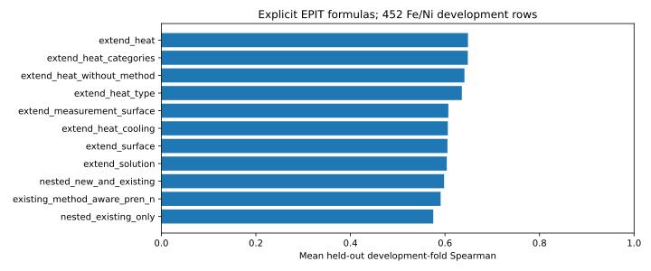

Heat-treatment categories are a promising development-only correction, but not a validated transferable corrosion law. They improve the current best formula in all five saved folds. Numeric heat temperature/duration alone do not improve it. The gain disappears when publications are held out, and the complete nested search has uncertain benefit.
| formula | development_spearman | source_held_out_spearman | development_mae_mV | folds_improved |
|---|---|---|---|---|
| existing_method_aware_pren_n | 0.5908 | 0.3779 | 199.7607 | 0 |
| extend_heat | 0.6487 | 0.3671 | 192.6988 | 5 |
| extend_heat_categories | 0.6483 | 0.3492 | 192.0480 | 5 |
| extend_heat_type | 0.6357 | 0.3436 | 194.4562 | 5 |
| extend_heat_numeric | 0.5880 | 0.3771 | 199.9648 | 1 |
| extend_heat_cooling | 0.6060 | 0.3997 | 195.8193 | 4 |
| extend_surface | 0.6052 | 0.3984 | 199.5624 | 4 |
| new_pren_loglinear | 0.5570 | 0.2207 | 232.2424 | 1 |
| new_pren_interactions | 0.5548 | 0.2137 | 235.4758 | 1 |
| new_resolved_material | 0.5156 | 0.2988 | 222.7357 | 1 |
| nested_new_and_existing | 0.5981 | 0.3112 | 240.7391 | 3 |
| nested_existing_only | 0.5752 | 0.3192 | 206.0894 | 0 |
These comparisons use identical applicable rows. Source-blocked results use different development partitions, so compare candidates against their baseline within each column. No final-model query partition was changed. No formula has been promoted to training. See candidate_coefficients.csv, candidate_uncertainty.json and verification.json.
37 candidates: 9 current rules and 28 explicit equations/extensions. No PySR. Only 452 applicable Fe/Ni development rows; the 152 final-test targets were masked and excluded. These are formula scores, not TabICL model scores.
Exploratory follow-up: ten heat/surface ablations were added after the first 27-candidate study. Development data were reused; nested fitting prevents direct held-out-target leakage but these results are not an independent confirmation of the researcher's hypothesis choices.
Each outer development fold is held out while the other four folds choose regularization and formula. Imputation, scaling, supported categories and the old formula are refitted inside every fitting split. Among candidates within 0.005 inner-fold Spearman of the best, prefer fewer terms, then stronger regularization.
Interpretation: individual-family scores describe the candidates examined; choosing the largest of them introduces selection optimism. The nested_new_and_existing row assesses the complete selection procedure. nested_existing_only assesses choosing among the original nine rules by the same procedure. Full-development fits below are for future final training only and were never used to compute validation scores.

| name | mean_spearman | sd_fold_spearman | minimum_fold_spearman | maximum_fold_spearman | mean_mae_mV | mean_terms | gain_vs_current_best | folds_better_than_current |
|---|---|---|---|---|---|---|---|---|
| extend_heat | 0.6487 | 0.1163 | 0.4490 | 0.7691 | 192.6988 | 13.8 | 0.0579 | 5 |
| extend_heat_categories | 0.6483 | 0.1166 | 0.4477 | 0.7821 | 192.0480 | 9.8 | 0.0575 | 5 |
| extend_heat_without_method | 0.6412 | 0.1118 | 0.5029 | 0.7810 | 195.4923 | 13.8 | 0.0504 | 4 |
| extend_heat_type | 0.6357 | 0.0965 | 0.4742 | 0.7344 | 194.4562 | 7.8 | 0.0449 | 5 |
| extend_measurement_surface | 0.6071 | 0.1106 | 0.4377 | 0.7568 | 201.1784 | 16.4 | 0.0163 | 3 |
| extend_heat_cooling | 0.6060 | 0.1271 | 0.3803 | 0.7472 | 195.8193 | 3.0 | 0.0152 | 4 |
| extend_surface | 0.6052 | 0.1075 | 0.4180 | 0.7298 | 199.5624 | 12.4 | 0.0145 | 4 |
| extend_solution | 0.6038 | 0.0947 | 0.4434 | 0.7157 | 196.3852 | 6.8 | 0.0131 | 4 |
| extend_area | 0.5995 | 0.0961 | 0.4345 | 0.6957 | 198.3294 | 2.0 | 0.0087 | 4 |
| extend_surface_numeric | 0.5992 | 0.0965 | 0.4276 | 0.6963 | 196.8245 | 2.8 | 0.0085 | 4 |
| nested_new_and_existing | 0.5981 | 0.2000 | 0.2291 | 0.7821 | 240.7391 | 20.6 | 0.0074 | 3 |
| extend_surface_categories | 0.5972 | 0.1100 | 0.3991 | 0.7176 | 200.4786 | 10.6 | 0.0064 | 4 |
| extend_process | 0.5961 | 0.1867 | 0.2433 | 0.7618 | 207.4163 | 29.2 | 0.0053 | 4 |
| extend_solution_amounts | 0.5935 | 0.0849 | 0.4466 | 0.6875 | 199.5225 | 2.0 | 0.0027 | 4 |
| extend_measurement | 0.5930 | 0.0929 | 0.4459 | 0.6937 | 200.3328 | 5.0 | 0.0023 | 4 |
| extend_scan | 0.5911 | 0.0840 | 0.4479 | 0.6866 | 199.7395 | 2.0 | 0.0004 | 3 |
| extend_phase | 0.5908 | 0.0851 | 0.4457 | 0.6866 | 199.7261 | 1.8 | 0.0001 | 1 |
| existing_method_aware_pren_n | 0.5908 | 0.0851 | 0.4457 | 0.6866 | 199.7607 | 5.0 | 0.0000 | 0 |
| extend_heat_window | 0.5906 | 0.0846 | 0.4475 | 0.6864 | 199.8563 | 3.0 | -0.0002 | 2 |
| extend_heat_temperature | 0.5905 | 0.0839 | 0.4470 | 0.6838 | 199.7484 | 2.0 | -0.0003 | 3 |
| extend_material | 0.5898 | 0.0877 | 0.4431 | 0.6880 | 198.4780 | 11.0 | -0.0010 | 3 |
| extend_heat_duration | 0.5892 | 0.0842 | 0.4463 | 0.6864 | 199.9371 | 2.0 | -0.0016 | 1 |
| extend_heat_numeric | 0.5880 | 0.0841 | 0.4437 | 0.6839 | 199.9648 | 3.0 | -0.0028 | 1 |
| extend_all | 0.5786 | 0.1989 | 0.2054 | 0.7627 | 243.8569 | 46.8 | -0.0122 | 4 |
| nested_existing_only | 0.5752 | 0.0915 | 0.4457 | 0.6866 | 206.0894 | 5.2 | -0.0156 | 0 |
| existing_mns_inclusion_penalty | 0.5708 | 0.0981 | 0.4663 | 0.7082 | 208.0737 | 6.0 | -0.0200 | 2 |
| new_pren_loglinear | 0.5570 | 0.0794 | 0.4226 | 0.6588 | 232.2424 | 4.0 | -0.0338 | 1 |
| new_resolved_all | 0.5551 | 0.1749 | 0.2291 | 0.7509 | 250.6859 | 50.8 | -0.0357 | 2 |
| new_pren_interactions | 0.5548 | 0.0558 | 0.4687 | 0.6087 | 235.4758 | 7.0 | -0.0360 | 1 |
| new_resolved_process | 0.5537 | 0.1755 | 0.2309 | 0.7526 | 239.5455 | 43.2 | -0.0371 | 1 |
| existing_pren_n_improved_environment | 0.5505 | 0.0838 | 0.4426 | 0.6525 | 209.1126 | 5.0 | -0.0403 | 0 |
| existing_mo_n_acid_repassivation | 0.5494 | 0.0822 | 0.4428 | 0.6475 | 209.0993 | 6.0 | -0.0414 | 0 |
| existing_coupled_breakdown | 0.5340 | 0.0796 | 0.4496 | 0.6598 | 229.4628 | 3.0 | -0.0568 | 1 |
| existing_cr_mow_n_synergy | 0.5339 | 0.0879 | 0.4008 | 0.6326 | 213.0332 | 4.0 | -0.0569 | 0 |
| new_resolved_measurement | 0.5285 | 0.0864 | 0.4289 | 0.6712 | 223.6787 | 19.0 | -0.0623 | 1 |
| existing_fe_ni_cr_threshold | 0.5212 | 0.0642 | 0.4130 | 0.5967 | 216.6064 | 5.0 | -0.0695 | 0 |
| new_resolved_material | 0.5156 | 0.0759 | 0.3990 | 0.6051 | 222.7357 | 15.0 | -0.0752 | 1 |
| existing_threshold_saturation | 0.5101 | 0.0796 | 0.3802 | 0.5927 | 218.8492 | 4.0 | -0.0806 | 0 |
| existing_pren_n_linear | 0.5060 | 0.0849 | 0.4247 | 0.6145 | 222.9929 | 3.0 | -0.0848 | 0 |
| name | mean_spearman | sd_fold_spearman | minimum_fold_spearman | maximum_fold_spearman | mean_mae_mV | mean_terms | gain_vs_current_best | folds_better_than_current |
|---|---|---|---|---|---|---|---|---|
| existing_pren_n_improved_environment | 0.4033 | 0.1842 | 0.0592 | 0.6062 | 225.9713 | 5.0 | 0.0254 | 3 |
| existing_cr_mow_n_synergy | 0.4012 | 0.1736 | 0.1133 | 0.5852 | 236.6958 | 4.0 | 0.0233 | 3 |
| extend_heat_cooling | 0.3997 | 0.2116 | 0.2064 | 0.7229 | 231.7821 | 2.6 | 0.0219 | 3 |
| extend_surface | 0.3984 | 0.2184 | 0.1515 | 0.7196 | 232.0271 | 11.8 | 0.0205 | 3 |
| extend_heat_without_method | 0.3958 | 0.1914 | 0.1191 | 0.6369 | 251.5256 | 13.0 | 0.0179 | 3 |
| existing_mo_n_acid_repassivation | 0.3888 | 0.2126 | -0.0161 | 0.6057 | 233.1093 | 6.0 | 0.0110 | 3 |
| existing_fe_ni_cr_threshold | 0.3873 | 0.1577 | 0.1857 | 0.5816 | 237.4900 | 5.0 | 0.0094 | 3 |
| existing_mns_inclusion_penalty | 0.3860 | 0.2073 | 0.0941 | 0.6598 | 231.9866 | 6.0 | 0.0081 | 2 |
| extend_solution_amounts | 0.3799 | 0.2342 | 0.1278 | 0.7317 | 232.6513 | 2.0 | 0.0021 | 3 |
| extend_material | 0.3794 | 0.2276 | 0.1633 | 0.7147 | 230.9476 | 11.0 | 0.0016 | 3 |
| existing_method_aware_pren_n | 0.3779 | 0.2315 | 0.1278 | 0.7229 | 232.7465 | 5.0 | 0.0000 | 0 |
| extend_phase | 0.3779 | 0.2315 | 0.1278 | 0.7229 | 232.6705 | 1.8 | 0.0000 | 0 |
| extend_surface_numeric | 0.3779 | 0.2313 | 0.1302 | 0.7229 | 232.6986 | 2.6 | -0.0000 | 1 |
| extend_surface_categories | 0.3773 | 0.2295 | 0.1406 | 0.7196 | 234.8194 | 10.2 | -0.0006 | 1 |
| extend_heat_numeric | 0.3771 | 0.2276 | 0.1207 | 0.7158 | 235.2622 | 3.0 | -0.0007 | 1 |
| extend_heat_temperature | 0.3760 | 0.2316 | 0.1214 | 0.7187 | 233.2956 | 2.0 | -0.0019 | 1 |
| extend_heat_duration | 0.3749 | 0.2284 | 0.1138 | 0.7124 | 235.0368 | 2.0 | -0.0029 | 1 |
| extend_heat_window | 0.3746 | 0.2355 | 0.1115 | 0.7238 | 233.1797 | 3.0 | -0.0033 | 2 |
| existing_threshold_saturation | 0.3744 | 0.1472 | 0.1894 | 0.5679 | 240.1595 | 4.0 | -0.0035 | 3 |
| extend_process | 0.3703 | 0.2128 | 0.1884 | 0.6661 | 240.5771 | 27.8 | -0.0076 | 2 |
| extend_heat | 0.3671 | 0.1662 | 0.2019 | 0.5727 | 250.8918 | 13.0 | -0.0108 | 2 |
| extend_solution | 0.3668 | 0.2413 | 0.1011 | 0.7210 | 233.2162 | 7.8 | -0.0111 | 1 |
| extend_area | 0.3649 | 0.2210 | 0.1130 | 0.6744 | 234.1053 | 2.0 | -0.0129 | 1 |
| extend_scan | 0.3648 | 0.2415 | 0.1108 | 0.7229 | 235.4853 | 2.0 | -0.0131 | 0 |
| extend_measurement_surface | 0.3586 | 0.2378 | 0.1396 | 0.7006 | 238.3741 | 15.8 | -0.0192 | 2 |
| existing_pren_n_linear | 0.3570 | 0.2983 | -0.0066 | 0.7659 | 239.3479 | 3.0 | -0.0209 | 2 |
| extend_measurement | 0.3559 | 0.2399 | 0.1083 | 0.7013 | 236.5573 | 5.0 | -0.0219 | 1 |
| extend_heat_categories | 0.3492 | 0.1617 | 0.1971 | 0.5830 | 252.0192 | 9.0 | -0.0287 | 3 |
| extend_all | 0.3447 | 0.2344 | 0.1162 | 0.6628 | 240.6735 | 46.4 | -0.0332 | 1 |
| new_resolved_process | 0.3442 | 0.2536 | 0.0258 | 0.5805 | 304.0816 | 41.8 | -0.0337 | 1 |
| existing_coupled_breakdown | 0.3438 | 0.2422 | 0.0324 | 0.6217 | 263.9778 | 3.0 | -0.0341 | 2 |
| extend_heat_type | 0.3436 | 0.1680 | 0.1726 | 0.5830 | 252.3771 | 7.4 | -0.0343 | 3 |
| nested_existing_only | 0.3192 | 0.2271 | -0.0161 | 0.5820 | 246.0233 | 4.8 | -0.0587 | 1 |
| nested_new_and_existing | 0.3112 | 0.2254 | -0.0161 | 0.5820 | 264.3041 | 9.4 | -0.0667 | 1 |
| new_resolved_material | 0.2988 | 0.2803 | -0.0482 | 0.5964 | 296.4832 | 15.0 | -0.0791 | 2 |
| new_resolved_measurement | 0.2963 | 0.2654 | -0.0282 | 0.6131 | 305.8101 | 19.0 | -0.0816 | 2 |
| new_pren_loglinear | 0.2207 | 0.2309 | -0.1222 | 0.4137 | 263.9582 | 4.0 | -0.1571 | 1 |
| new_resolved_all | 0.2173 | 0.3633 | -0.3749 | 0.6129 | 339.5953 | 50.4 | -0.1605 | 2 |
| new_pren_interactions | 0.2137 | 0.2435 | -0.0875 | 0.4537 | 308.1706 | 7.0 | -0.1642 | 1 |
Score equation (standardization constants and missing-value handling are in the corresponding JSON):
+0.699672 * z(base_score) +0.075954 * z(heat_treatment_type=annealing) -0.037062 * z(heat_treatment_type=heat_treatment) -0.060953 * z(heat_treatment_type=homogenization) -0.090977 * z(heat_treatment_type=soaking) +0.050444 * z(heat_treatment_type=solution_annealing) -0.036660 * z(heat_treatment_type=solution_treatment) +0.102856 * z(heat_treatment_type=tempering) -0.064770 * z(heat_treatment_cooling=still_air) +0.064770 * z(heat_treatment_cooling=water_quench)
Numeric terms use fitting-row median imputation and standardization. Missing and unseen categories receive the mean fitted category contribution. No missingness indicator, source ID, reference, target-derived column or final-test data is a predictor. Category effects are empirical experimental-condition associations, not established physical laws.
Basic PREN/material coefficients are constrained nonnegative, and direct temperature/log-chloride coefficients nonpositive. Interactions and category corrections may modify these effects, so the full equation is not globally monotone. The thermal-window shape is a hypothesis, not a measured sensitization law. Coefficient bounds, regularization and eligibility are documented in source and artifacts.
Source-publication-blocked folds are an additional development robustness check. They reuse the same development rows and never replace the frozen final partition. Bootstrap intervals condition on the fitted models and do not represent training-seed uncertainty.
Literature motivates candidate effects; it does not validate their fitted coefficients on other alloys or conditions. No current generator, Optuna study, or training configuration was changed.